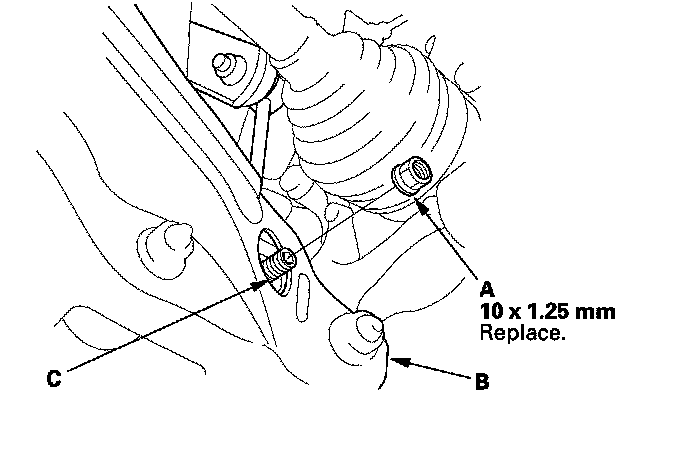

Rear Suspension
Damper ReplacementRemoval
1. Raise the rear of the vehicle, and support it with safety stands in the proper locations.
2. Remove the rear wheel.
3. With active damper system: Disconnect the damper coil connector (A).
NOTE: Be careful not to damage or contaminate the damper coil connector;
4. Position a floor jack under the lower arm B. Raise the floor jack until the suspension begins to compress.
5. Remove the flange nut (A) while holding the respective joint pin (C) with a hex wrench, then remove the stabilizer link from the lower arm B.

6. Remove the flange bolt (A) from the bottom of the damper.

7. Remove the flange bolt (B) from the knuckle.
8. Remove the flange bolt (A) from the top of the damper.
9. Lower the floor jack gradually, then remove the damper (B) from the vehicle.
Inspection
1. Push on the damper as shown.

2. Compress the damper assembly by hand, and check for smooth operation through a full stroke, both compression and extension. The damper should extend smoothly and constantly when compression is released. If it does not, the gas is leaking and the damper should be replaced.
3. Check for oil leaks, abnormal noises, and binding during these tests.
Installation
1. Position the damper (A) between the body and the lower arm B.
2. Loosely install a new flange bolt (C) to the top of the damper.
3. Loosely install the new flange bolt (A) to the bottom of the damper.
4. Loosely install a new flange bolt (B) to the knuckle.
5. Install the stabilizer link on the lower arm B, then loosely install a new flange nut (A).
6. Raise the floor jack until the hole in the trailing arm aligns with the hole in the damper.
7. Tighten the flange bolts to the specified torque values.
8. Tighten the flange nut to the specified torque value, while holding the respective joint pin with a hex wrench.
9. With active damper system: Connect the damper coil connector (A).
NOTE: Be careful not to damage or contaminate the damper coil connector.
10. Clean the mating surface of the brake disc/drum and the inside of the wheel, then install the rear wheel.
11. With active damper system: Do the memorizing rear suspension full rebound position.
12. With active damper system: Start the engine, then make sure there are no active damper system DTCs with the HDS.
13. With active damper system: Do the DAMPER FORCE OPERATION in the ACTIVE DAMPER SYSTEM INSPECTION MENU with the HDS, then make sure the all four damper units function normally.
14. Check the wheel alignment, and adjust it if necessary.